Республикалық және өңірлік басылымдар, телеарналар мен ақпараттық агенттіктердің жобаға арналған материалдары. Материалы о проекте в республиканских и региональных изданиях, на телеканалах и в информационных агентствах.
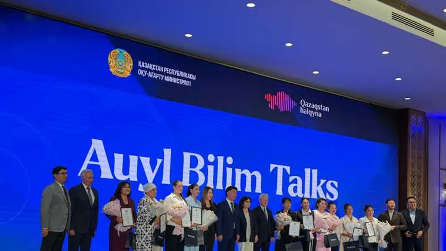
Auyl Bilim Talks: как меняется сельская школаAuyl Bilim Talks: как меняется сельская школа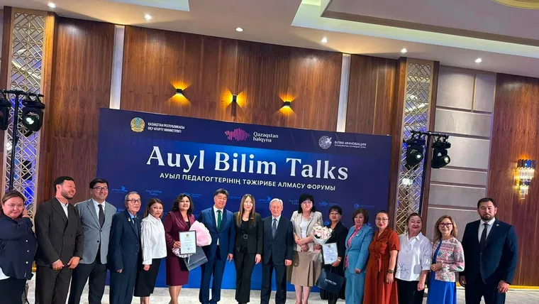
Білім алуға – бірдей мүмкіндікБілім алуға – бірдей мүмкіндік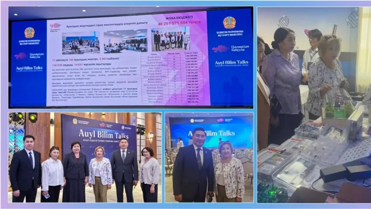
«Auyl Bilim Talks»: ауылдық білім берудің болашағы туралы диалог«Auyl Bilim Talks»: ауылдық білім берудің болашағы туралы диалог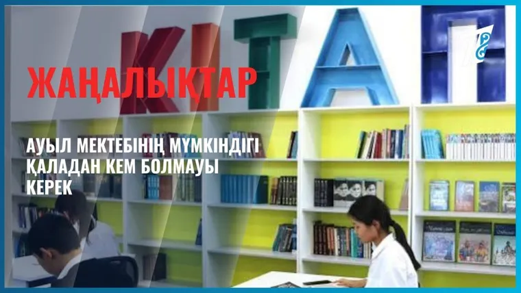
Ауыл мектептеріне қолдауАуыл мектептеріне қолдау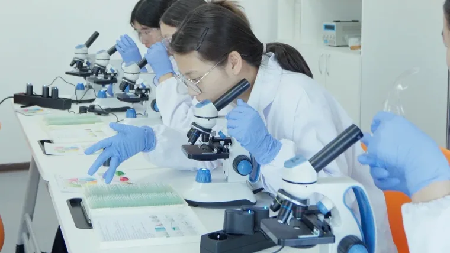
Auyl Bilim Talks: ауыл мектебінің жаңа мүмкіндіктеріAuyl Bilim Talks: ауыл мектебінің жаңа мүмкіндіктері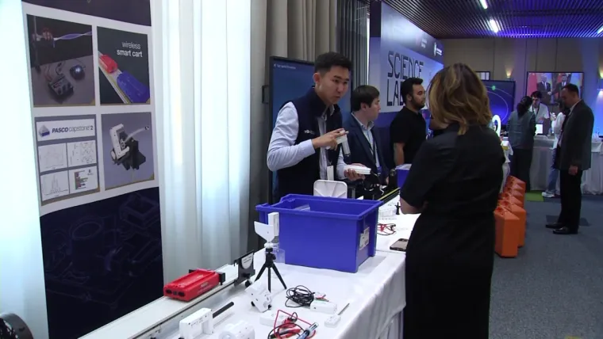
«Auylbilim» жобасы ауыл мектептеріне тың серпін берді«Auylbilim» жобасы ауыл мектептеріне тың серпін берді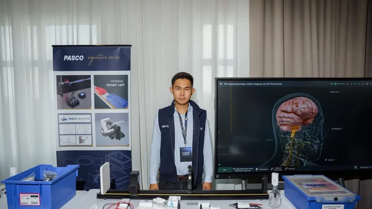
У этой страны Фантастическое будущее! Это Казахстан!У этой страны Фантастическое будущее! Это Казахстан!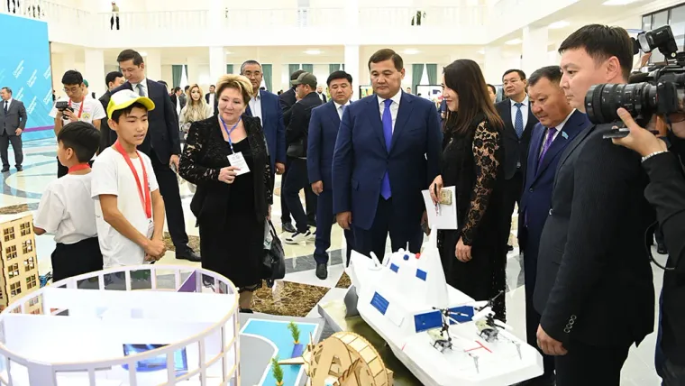
Фонд «Қазақстан халқына»: проекты, меняющие жизньФонд «Қазақстан халқына»: проекты, меняющие жизнь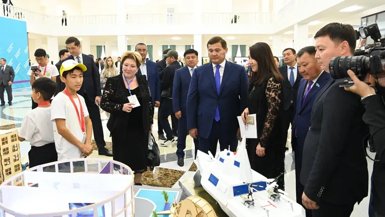
В Кызылорде прошла IV Национальная конференция по благотворительностиВ Кызылорде прошла IV Национальная конференция по благотворительности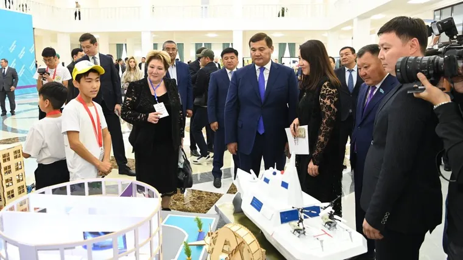
Қызылордада «Жүйелі қайырымдылық: Тұрақтылық, серіктестік, мұра» тақырыбында IV Ұлттық қайырымдылық конференциясы өттіҚызылордада «Жүйелі қайырымдылық: Тұрақтылық, серіктестік, мұра» тақырыбында IV Ұлттық қайырымдылық конференциясы өтті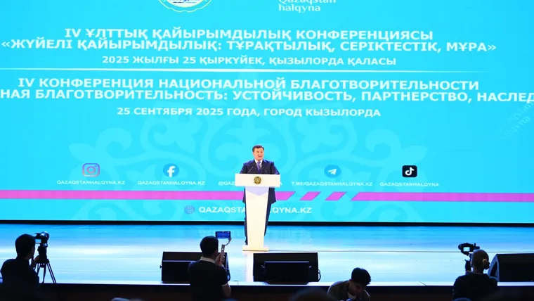
В Кызылорде прошла IV Национальная конференция по благотворительности «Жүйелі қайырымдылық: Тұрақтылық, серіктестік, мұра»В Кызылорде прошла IV Национальная конференция по благотворительности «Жүйелі қайырымдылық: Тұрақтылық, серіктестік, мұра»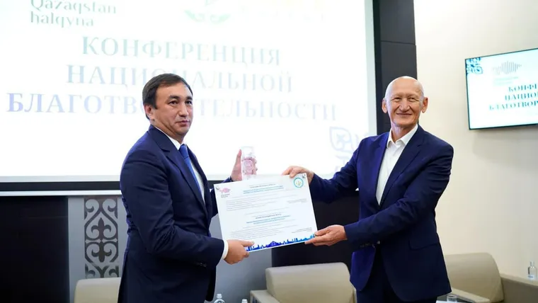
Қызылорда облысының әкімдігі «Қазақстан халқынан» сыйлығымен марапатталдыҚызылорда облысының әкімдігі «Қазақстан халқынан» сыйлығымен марапатталды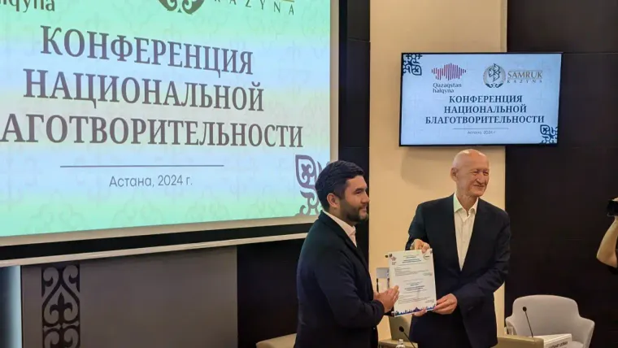
Диалог во имя добра: как развивается благотворительность в КазахстанеДиалог во имя добра: как развивается благотворительность в Казахстане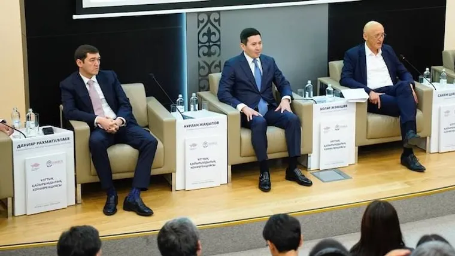
В Астане прошла Национальная конференция благотворительностиВ Астане прошла Национальная конференция благотворительности